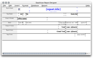
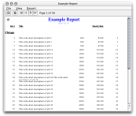
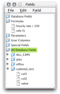
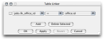

These screen shots were taken from version 0.7.0.
Report Design Window
Click on the image to open a full-sized version.
A report has multiple parts; each part may in turn be made up of multiple sections (not shown). Report parts are separated by a draggable resizing bar. In this image, the Report Footer is disabled.
Along the left are the names of the sections. The large white areas are sections containing report fields: database columns, text fields, formulas, aggregates, and special fields such as the report title or page number.
Popup menus (not shown) are available in the left hand labels, sections, and for each field.
For a more complete explanation, see the User's Manual.
Report Output Window
Click on the image to open a full-sized version.
This is a picture of the report window. Running a report from within DataVision uses the Swing layout engine, producing the output you see here. This output can be sent to a printer.
DataVision can also export report results to many different formats: XML, HTML, PDF, comma- or tab-separated text, LaTeX, and more.
Field Picker Window
Click on the image to open a full-sized version.
When you select one of the field types from the Insert menu on the design window, this window opens. It contains a tree list containing all database field types except text labels. Click and drag a field to add it to the report.
Table Linker Dialog
Click on the image to open a full-sized version.
Use this dialog to create or edit links (joins) between tables. The top of the window displays a list of joins or links between table columns.
{kind=link}
{kind=link}
{kind=link}
{kind=link}